POO · curso 2
3. Conjuntos de datos · POO
Escrito por Adrián Quiroga Linares.
3.1 Conjuntos de Datos
- Una buena parte de la programación consiste en manejar conjuntos de datos sobre los que se realizan operaciones CRUD (creación, lectura, actualización y eliminación).
- Típicamente la mayoría de los lenguajes de programación soportan la representación de conjuntos de datos a través del concepto de array. Sin embargo tienen muchas limitaciones.
- Se han propuesto una buena cantidad de formas de representar conjunto de datos que intentan dar respuesta a esas limitaciones: arrays, colecciones, iteradores, listas, conjuntos... Todos los tipos de conjuntos de datos son mapas, colecciones o iteradores, el resto particulariza el tipo del cual hereda.
3.2 Arrays
Un array en Java es conceptualmente igual al resto de lenguajes, un conjunto de elementos del mismo tipo que ocupan posiciones de memoria consecutivas para facilitar su acceso de forma sencilla a través de un índice.
En Java, un array es en realidad un objeto. Esto significa que al crear un array, se debe reservar memoria explícitamente usando new, a menos que se inicialice directamente con valores como en el ejemplo anterior (su clase es tipodedatos[] . Además, hereda métodos de la clase Object y tiene un atributo público length que almacena su longitud.
int[] edades = new int[5]; // Crea un array de enteros con 5 elementos, inicializados en 0
edades[0] = 10; // Asigna valores a los elementos
edades[1] = 15;
System.out.println(edades.length); // Imprime la longitud del array: 5
Es la única estructura que permite almacenar tipos primitivos. Pero presenta varias limitaciones:
- Los arrays tienen un tamaño fijo, una vez se llega al límite no se pueden añadir más elementos.
- No se pueden borrar elementos cuando el array maneja un tipo primitivo. Cuando maneja objetos, se pueden eliminar elementos escribiendo
nullen su posición. Como consecuencia, en todos los posteriores recorridos se deberá tener cuidado con estos valores nulos para evitar un error de ejecución.
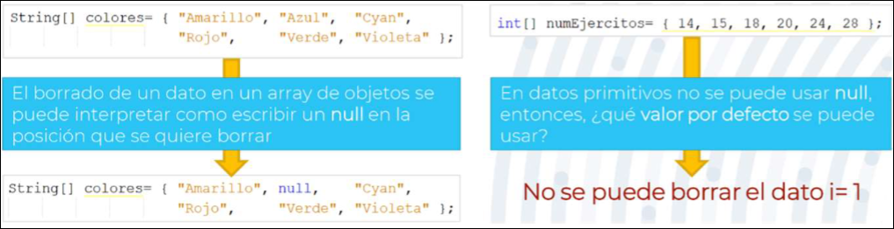
[!Buenas Prácticas]
- Sólo se deben usar array cuando se sabe que el número de elementos es fijo y no se va a eliminar ninguno.
- Sólo se deben usar cuando se invocan métodos de otras clases que devuelvan un array y convertirlos a otras estructuras sea ineficiente.
3.3 Colecciones
Colecciones: grupos de datos desordenados sobre los que se definen operaciones de inserción, borrado y actualización.
3.3.1 Collection
Collection<E>: es una interfaz que define las operaciones que debe tener una colección que almacena datos de tipo E. No se puede reservar memoria (instanciar) para un objeto de tipo Collection porque es una interfaz.
Los elementos de las colecciones están desordenados, así que sus elementos no se pueden identificar mediante un índice.
Métodos de Collection más frecuentes:
boolean add(E ele):añade el elementoelea la colecciónboolean constains(Object ob):comprueba si el objetoobjse encuentra en la colecciónboolean isEmpty():indica si la colección está vacíavoid remove(Object obj):elimina el objetoobjde la colecciónIterator<E> iterator():genera un iterador que se puede usar para recorrer la colección.
Nota
contains y remove usan equals para comprobar si el objeto está en la colección
Algunas implementacionereferenciados de la interfaz Collection no soportan todas sus métodos. Como de todas formas es necesario que los implementen, generan una excepción del tipo UnsupportedOperationException.
Por ejemplo, la implementación del método values() de la clase HashMap devuelve una Collection para la cual el método add() no está soportado. Esta operación en concreto no se puede hacer, porque estaríamos metiendo un elemento sin clave en el HashMap, lo que rompe su estructura
Una de las formas de recorrer todos los elementos de una Collection es a través de un bucle for-each. No se puede hacer un for normal porque la colección no tiene índices que recorrer.
Sin embargo surge un problema, las colecciones no se pueden modificar mientras se están recorriendo porque esto puede hacer que el iterador que la está recorriendo pierda la pista del estado de la colección. Si se intenta, se genera una excepción del tipo ConcurrentModificationException
Collection<String> nombres = new ArrayList<>();
nombres.add("Ana"); // Añadir un elemento
nombres.add("Juan");
System.out.println(nombres.contains("Ana")); // true
System.out.println(nombres.isEmpty()); // false
nombres.remove("Ana"); // Eliminar un elemento
System.out.println(nombres.contains("Ana")); // false
3.3.2 Iterator
Iterator<E>: interfaz que define las operaciones que se pueden usar para recorrer los elementos de una colección de datos de tipo E. No se puede reservar memoria (instanciar) para un objeto de tipo Iterator, porque es una interfaz.
Métodos de Iterator:
boolean hasNext():indica si existe un elemento en la siguiente posición en la que se encuentra el punteroE next():actualiza el puntero a la posición siguiente y obtiene el elemento que se encuentra ahí.remove():elimina el elemento que se encuentra en la posición actual
Como los punteros sólo se mueven hacia adelante, un iterador sólo se puede usar una vez para recorrer los elementos de la colección, ya que después el puntero del iterador estará en el final de la colección y hasNext() devolverá siempre falso.
Iterator<String> iterador = nombres.iterator();
while (iterador.hasNext()) {
String nombre = iterador.next();
System.out.println(nombre);
if (nombre.equals("Juan")) {
iterador.remove(); // Elimina el elemento actual
}
}
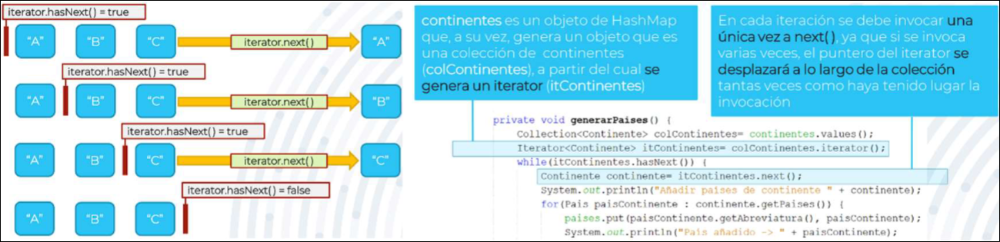
Un iterador es una forma alternativa al bucle for-each para recorrer los elementos de una colección.
- A diferencia de for-each, un iterador permite la eliminación de los elementos mientras se recorre la colección, eliminado tanto los elementos de la colección como del iterador.
- El rendimiento de un iterador y de un
for eaches el mismo, ya que en realidad el compilador interpreta elfor-eachcomo si fuese un iterador.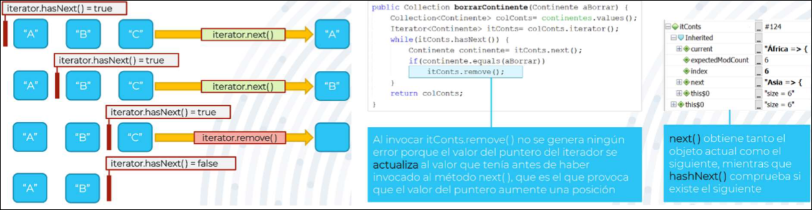
3.4 Listas
3.4.1 Listas
List <E>: subinterfaz de Collection. Además de soportar las operaciones de Collection, soporta las que debe tener una lista. No se puede reservar memoria (instanciar) para un objeto de tipo List porque es una interfaz.
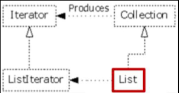
Los elementos de las List tienen un orden que está relacionado con la secuencia en que dichos elementos han sido introducidos durante la ejecución. Este orden permite identificar cada elemento con un índice que indica su posición en la List. Pueden contener elementos duplicados.
Métodos de List:
E get(int i):obtiene el elemento de índicei. (get(null)no da fallo, devuelvenull)void set(int i, E ele):actualiza el objeto de índiceicon valoreleE remove(int i): Elimina el objeto de índicei
Las List se pueden recorrer tanto usando sus índices, ya que son ordenadas, como usando un bucle for-each, ya que son Collections.
List<String> frutas = new ArrayList<>();
frutas.add("Manzana");
frutas.add("Pera");
frutas.add("Manzana"); // Las listas permiten duplicados
System.out.println(frutas.get(1)); // Pera
frutas.set(1, "Banana"); // Cambia el elemento en la posición 1
System.out.println(frutas.get(1)); // Banana
frutas.remove(0); // Elimina el primer elemento (Manzana)
System.out.println(frutas); // [Banana, Manzana]
3.4.2 ArrayList
ArrayList<E>: clase que implementa la interfaz List. Sí se puede reservar memoria (instanciar) para un objeto de tipo ArrayList, pues es una clase.
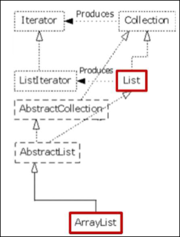
Tiene un atributo público, size. Las operaciones de acceso a sus elementos tienen complejidad lineal. Además permite introducir valores nulos.
El constructor sin argumentos de ArrayList reserva espacio para 10 elementos. ArrayList realiza una redimensión dinámica cuando el número de datos que se almacena es mayor que la capacidad de almacenamiento de la lista. Por defecto, se aumentará la capacidad en 10. Si la redimensión se realiza frecuentemente se penalizará el rendimiento de la lista, ya que internamente la redimensión supone incrementar el tamaño de un array normal.
ArrayList<Tipo> nombre = new ArrayList<>();
ArrayList<Tipo> nombre = new ArrayList<Tipo>();
ArrayList<Tipo> nombre = new ArrayList<>(capacidad);
ArrayList<Tipo> nombre = new ArrayList<>(coleccion);
ArrayList nombre = new ArrayList();
ArrayList<Tipo> nombre = new ArrayList<>(){};
ArrayList<Tipo> nombre = new ArrayList<>(){{ add(...); }};
Los ArrayList se recorren usando un bucle for normal. Al eliminar elementos durante el recorrido habrá que tener cuidado con que el índice no supere el nuevo tamaño. Durante el recorrido hay que comprobar que el elemento actual es distinto de null antes de operar sobre él.
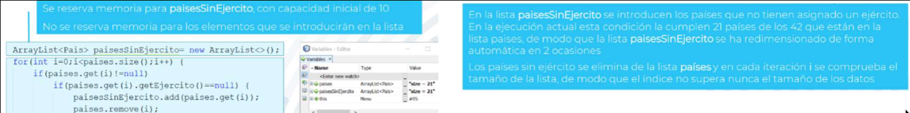
En realidad, la clase ArrayList encapsula un array normal de objetos al que se accede a través de los métodos de la interfaz List.
- La pila almacena la referencia al array de objetos
- El montón almacena el array de objetos y los demás atributos de
ArrayList(size)
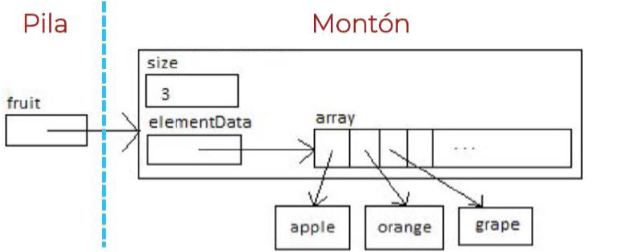
ArrayList<Integer> numeros = new ArrayList<>(); // Crea un ArrayList con capacidad para 10 elementos
for (int i = 1; i <= 15; i++) {
numeros.add(i); // Al llegar a 11 elementos, el ArrayList se redimensionará automáticamente
}
System.out.prreferenciadointln("Tamaño: " + numeros.size()); // 15
System.out.println("Elemento en la posición 10: " + numeros.get(10)); // 11
numeros.set(5, 100); // Actualiza el elemento en la posición 5
System.out.println(numeros); // Muestra todos los elementos
3.5 Conjuntos
Conjutos: colecciones en las que no se repiten los datos. Eso significa que los datos serán diferentes de acuerdo al criterio de igualdad definido por ellos (método equals).
3.5.1 Set
Set<E>: subinterfaz de Collection que soporta exactamente las mismas operaciones que una Collection. No se puede reservar memoria (instanciar) para un objeto de tipo Set, pues es una interfaz.
Los elementos del conjunto son únicos. Para asegurarse de esto, se debe sobreescribir el método equals de la clase E. Se debe controlar que la modificación de los objetos no se dé como resultado que dicho objeto sea igual a otro de los almacenados, porque se generarían inconsistencias cuando las modificaciones no se realizan con los métodos de Set, si no que se realizan por aliasing. Como consecuencia, permiten sólo un valor nulo.
Como es una colección, se recorre con un bucle for-each o un iterador, no con un índice.
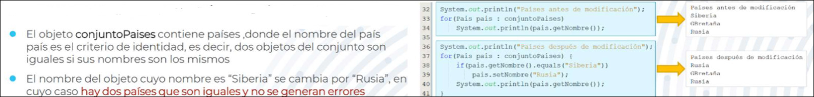
3.5.2 HashSet
HashSet<E>: clase que implementa la interfaz Set. Sí se puede reservar memoria para un objeto de tipo HashSet, porque es una clase.
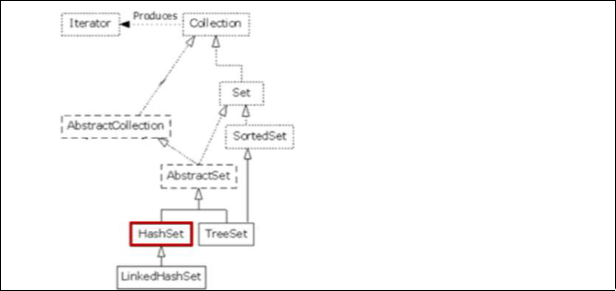
Internamente, sus datos se almacenan como las claves de un objetoHashMap(se insertan en base al hashCode).
- Sus valores están desordenados, pues se almacenan en una tabla hash de acuerdo a una función hash.
- Las operaciones de acceso a sus elementos se realizan en tiempo constante
Set<Integer> numeros = new HashSet<>();
numeros.add(10);
numeros.add(20);
numeros.add(10); // Este 10 no se añadirá porque ya existe en el conjunto
System.out.println(numeros); // Muestra los elementos en un orden basado en su hash code
numeros.add(null); // Se permite añadir un único elemento null
System.out.println(numeros.contains(null)); // true
// Recorrido del HashSet
for (Integer numero : numeros) {
System.out.println(numero);
}
3.6 Mapas
3.6.1 Map
Map <K,V>: interfaz que relaciona una clave con un valor de manera que a partir de la clave se obtiene el valor asociado a ella. No se puede reservar memoria para un objeto de tipo Map, porque es una interfaz.
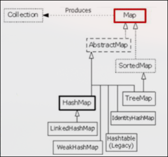
Las claves no pueden estar repetidas, pero los objetos sí (por tantos varias calves pueden tener asociado un mismo valor). Tanto las claves como los valores tienen que ser objetos, no pueden ser tipos primitivos. Algunas implementaciones permiten almacenar claves y valores nulos.
La clave puede ser cualquier objeto, siempre que su clase siga las siguientes reglas:
- El
equals()debe estar sobrescrito, pues se usará para localizar y obtener la clave con las que recupera un valor. - El objeto clave debe ser inmutable (es decir, no cambiará nunca una vez se realiza la reserva de memoria) pues si se cambiara, perderíamos el acceso al valor asociado a la clave, pues el identificador de la entrada (
hashCode) se calculó en base al valor de la clave. Si la clave no es inmutable, entonces es necesario controlar que no se modifiquen aquellos atributos usados enequals()para comprobar la igualdad entre objetos.
Métodos de Map:
V get(Object key): Devuelve el valor asociado a la clavekeyV put(K key, V value): Asocia un valorvalueal que se le asocia una clavekeyV remove(Object key): Elimina el par clave-valor basado en la clave.boolean containsValue(Object value): indica si el valorvalueestá almacenado en el mapa, es decir, si tiene asociada una clave.boolean containsKey(Object key): indica si existe algún dato asociado a la clavekeysize()
containsKey() es más eficiente que containsValue() porque aprovecha la estructura de hashing de la implementación del Map para realizar la búsqueda de claves.
Algunas implementaciones de la interfaz Map no soportan todos sus métodos. Como de todas formas es necesario que los implementen, generan una excepción del tipo UnsupportedOperationException
Los objetos almacenados en un Map no se pueden recorrer directamente, ya que su objetivo es acceder a los valores a partir de las claves, no realiza una búsqueda de datos usando un criterio diferente de las claves. Map define métodos para convertir las claves y valores en estructuras de datos que se pueden recorrer, lo cual facilita el acceso a cada componente del mapa:
Collection<V> values(): Devuelve una colección con todos los valores del mapa, porque no se conoce el orden en el que se insertaron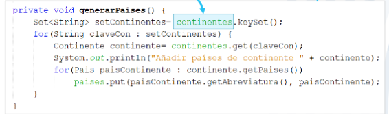
Set<K> keySet(): Devuelve un conjunto con todas las claves, porque no puede haber claves duplicadas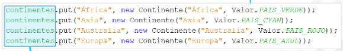
Set<Map.Entry<K, V>> entrySet(): Devuelve un conjunto con todas las entradas<clave, valor>. Devuelve un conjuntos porque no puede haber duplas duplicadas.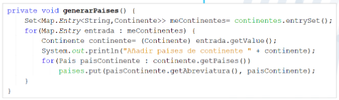
También se puede usar Iterator<Map.Entry<String,Contiente>> entrySet()
Map Entry
Map.Entry<K,V>: Interfaz que define métodos para acceder a una entrada de un mapa
K getKey():permite acceder a la clave de la entrada en el mapaV getValue():permite acceder al valor de la entrada en el mapa
3.6.2 HashMap
HashMap<K,V>: clase que implementa la interfaz Map. Sí se puede reservar memoria para un objeto de tipo HashMap, pues es una clase.
Los valores del HashMap están desordenados, pues se almacenan en una tabla hash de acuerdo con una función hash. Sin embargo, las operaciones de acceso a las entradas del HashMap se realizan en tiempo constante
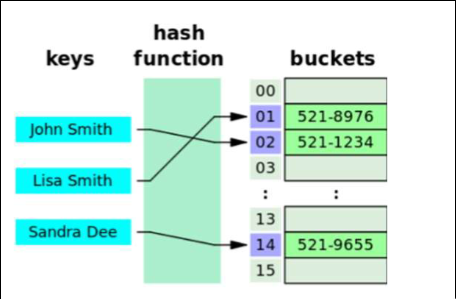
Cada clave del mapa está asociada a un código hash (hashcode), que es un entero generado aleatoriamente a partir de una semilla. Se supone que los hashCode son únicos para cada objeto, pero como son generados aletoriamente es imposible asegurar esto. Por tanto, cuando se comparan dos entradas de un HashMap
- Se comparan sus
hashCode:si son distintos, se entiende que los objetos son distitnos, si son iguales se pasa al paso 2 - Se invoca a
equals()para aplicar el criterio de igualdad.
El uso de los hashCode simplifica y hace más eficiente el acceso a los datos en un HashMap pues en primer lugar comprar enteros y sólo ejecutará equals() (que puede tener una implementación con comparaciones muy complejas) cuando coincidan.
Para generar el hashCode, es necesario sobreescribir el método hashCode() heredado de Object usando el valor de los atributos inmutables de la clave como semillas. La implementación de hashCode() en Object es un método nativo escrito en C. Se generan hashCodes parciales usando estas semillas en el método hashCode() de la clase Objects (el de Object no funciona con valores nulos).
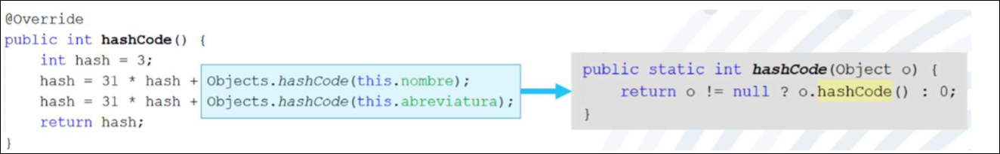
HashMap<K,V> m = new HashMap<>();
HashMap<K,V> m = new HashMap<K,V>();
HashMap<K,V> m = new HashMap<>(capacidad);
HashMap<K,V> m = new HashMap<>(capacidad, factorDeCarga);
HashMap<K,V> m = new HashMap<>(otroMapa);
HashMap m = new HashMap();
HashMap<K,V> m = new HashMap<>(){};
HashMap<K,V> m = new HashMap<>(){{ put(..., ...); }};
3.7 Comparativa
Según las características de los conjuntos de datos escogeremos uno y otro en función de para qué lo necesitamos:
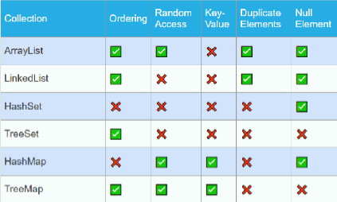
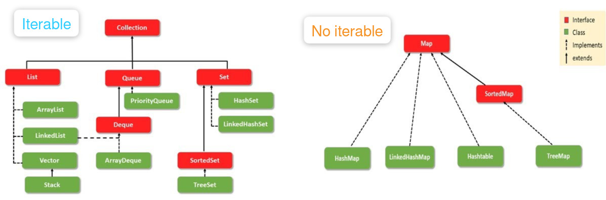
Las listas ocupan menos memoria que los mapas, y los mapas son más rápidos que las listas. Por lo general:
- Si hay restricciones de memoria respecto a la cantidad de datos a almacenar y la eficiencia no es la priordad: `ArrayList
- Si se necesita acceder en el orden de llegada:
ArrayList - Si no se necesita acceder a los datos en el orden en el que se almacenaron y se dispone de un identificador unívoco:
HashMap - Si no se necesita acceder a los datos en el orden en el que se almacenaron y los datos no se pueden repetir:
HashSet